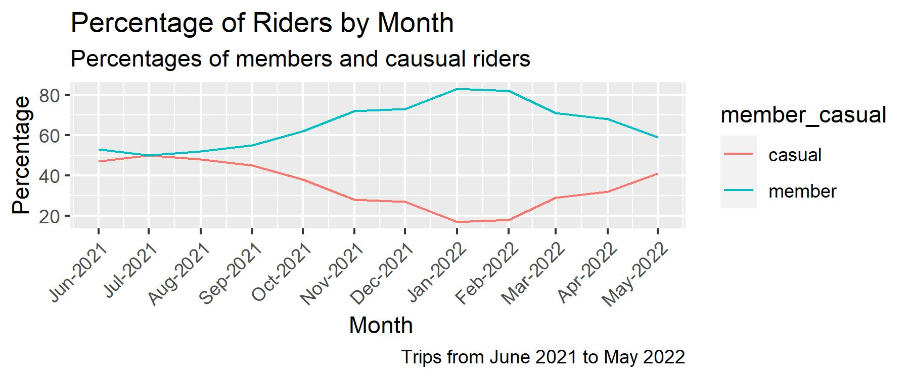

Case Study: Cyclistic Bike Share
Introduction
However, before this promotion campaign is accepted by the Cyclistic executive team, the data analyst team of six lead by the marketing director, Lily Moreno needs to provide the guides with data driven strategy.
As a data anlayst, my work is to find the insights from the dataset and present them to the stakeholders, who are my marketing supervisor, Moreno, and Cyclistic executive team. The business problem is to search for the differences that annual members and casual riders use Cyclistic bikes.
State 1: Ask
The question to the business problem is "how do annual members and casual riders use Cyclistic bikes differently?". To answer this question, the six stages of the data analysis are needed to support the findings and presented to the team members and the stakeholders.
State 2: Prepare
The historical data for bike trips can be publicly accessed at [the company's website](https://divvy-tripdata.s3.amazonaws.com/index.html). The data is in zip files and organized by years from 2014 to 2022. Only 12 most recently monthly datasets that are relevant to the business problem are considered, downloaded and housed locally in a sub-folder for further stages of the analysis.
The data integrity is well mananged because the data is originally collected and owned by Cyclistic, and only relevant variables are included to secure the privacy, security and accessibility of the datasets. The trip data by the staff serice and system inspection is deleted to guarantee the accuracy. Generally speaking, the data is ROCCC because it is regularly updated to the current availabe data. However, it needs some data cleaning because of some false starts of bike trips and users to secure the bike docks.
State 3: Process
To ensure the data integrity and accesiblity, the origal and cleaned data are stored locally and separately in different sub-folders. The csv and excel files are stored in the subfolders "data_csv" and "data_xlxs". The excel files are converted from the origal csv files, and they are cleaned using the sorting and filtering tools to observe any inaccuracy, inconsitancy, and incompleteness. Some records with the ride length less than 60 seconds are deleled from the excel files because they are potially false starts and user's relocks. Since the base time for pricing the charge on bikeride in minutes, a varialbe "ride_length_minutes" is added to the excel files. After that, some data aggregation is done for the purpose of accuracy check.
Also, using R programming, the data is sorted and filtered to look for any inconsistency, inaccuracy and inadequacy, and they are stored locally in a sub-folder. And finally, all the 12 monthly datasets are combined into a dataset for a whole year analysis. Checking the consistency among the results from the spreadsheets and R programming is very helpful in data cleaning so that it guarantees the data integrity.
Since each of the data file is in the csv format, it is converted to the excel format so that the data can be more effectively converted and transformed using the excel rich functionality. For example, using date and time format allows to calculate the ride length of each trip so that it can show some differences between the members and casual riders.
After the ride length is added to the sheet, some inconsistency of the data is observed between the start time and end time of the trips, so those are deleted rowwise.
State 4: Analyze
Firstly, geolocations of the start stations for each of the rider types are shown in the following maps.

For these two types of riders, there is no significant difference for using the bikes in terms of geolocatons of the stations.
Exploratory Data Analysis
After looking into the ride lengths in details, the data needs more cleaning in statistical terms for the outliers. After removing the outliers using the IQR method, the ride length distributios by types of riders and by days of week are shown here.

Descriptive measures on ride lengths
Descritpive measures on ride length (minutes)
| Ride Length | Min. | Median | 1Qu. | Mean | 3rd Qu. | Max. |
|---|---|---|---|---|---|---|
| 1 | 6.267 | 10.667 | 13.234 | 17.983 | 42.217 |
Descriptive measures on ride lengths (minutes) by type of riders
| member_casual | mean of ride length in minutes |
|---|---|
| casual | 15.67 |
| member | 11.57 |
Descriptive measures on ride lengths (minutes) by days of the week
| day_of_week | ride_length_minutes | |
|---|---|---|
| 1 | Sun | 14.76 |
| 2 | Mon | 12.80 |
| 3 | Tue | 12.26 |
| 4 | Wed | 12.35 |
| 5 | Thu | 12.45 |
| 6 | Fri | 12.98 |
| 7 | Sat | 14.77 |
The trend line of memberhip by month has shown that the percentage of members is decreasing, so it is a negative sign that Cyclistic should consider attacting more causal riders to be an annual member.
Even by day or month, the difference between the members and casual riders is about four minutes per trip as the bar plot and the line chart have shown.

Stage 5: Share
With the task assigned by the markeing supervisor, Lily Moreno, as a data story teller, after cruching all the data, and using all the methods and tools, I can show the insights clearly to the stakeholders including the executive team and my manager with [this power presentaton ](https://touhu11.github.io/capstone_cyclistic/cyclistic_presentation.pptx) with some recommenations.
Stage 6: Act
Based on my findings, I would like to give three recommendations.
Annual promotion is likely successful based on the casual rider’s trend line of increasing percentages of riders.
Their geo-location background is similar to that of the members based on their starting points of trips.
Their usage patterns are similar to those of the members by considering the ride lengths by days of the week.